调试面板
开始之前
1、确保机器已上电
2、确保机器连接正常、通信正常
3、确保机器处于零位状态
1 界面介绍
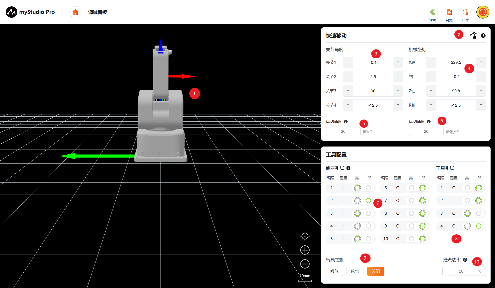
| 序号 | 功能介绍 |
|---|---|
| 1 | ultraArm P1 3D仿真模型（坐标系红色箭头：X，绿色箭头：Y，蓝色箭头：Z） |
| 2 | 自由移动开关，可开启或关闭自由移动模式 |
| 3 | 角度控制，通过点击 + - 按钮，对机械臂进行关节角度控制，数值代表当前机械臂的关节角度信息，也可以直接修改数值进行关节控制 |
| 4 | 坐标控制，通过点击 + -按钮，对机械臂进行坐标控制，数值代表当前机械臂的坐标姿态信息，也可以直接修改数值进行坐标控制 |
| 5 | 设置机械臂关节的运动步长，默认 20 度/秒 |
| 6 | 设置机械臂坐标的运动步长，默认 20 毫米/秒 |
| 7 | 底部引脚配置，可对底部IO进行读取和配置 |
| 8 | 工具引脚配置，可对末端工具IO进行读取和配置 |
| 9 | 气泵控制，可进行气泵的吸气、吹气和关闭操作 |
| 10 | 激光功率控制，通过文本框输入数值调控激光功率 |
2 自由移动
自由移动开关，可开启/关闭机械臂自由移动模式。
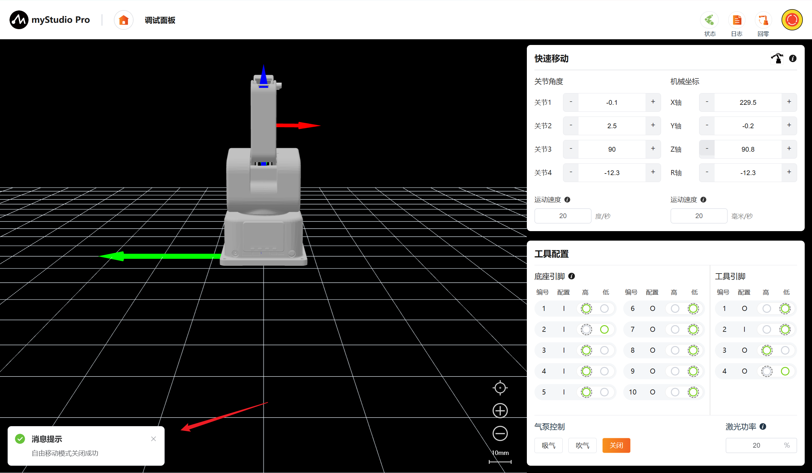
点击开关会弹出确认弹窗，点击确认按钮，即可开启自由移动模式。
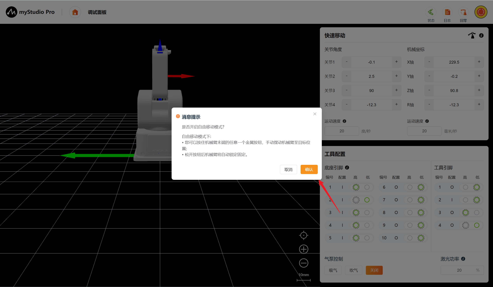
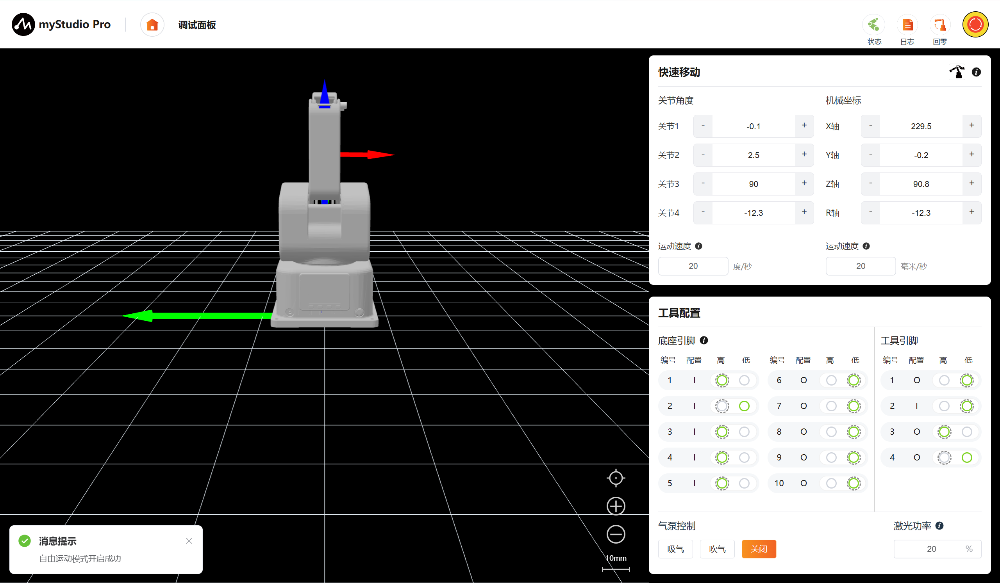
3 角度控制
在角度控制区域中，通过点击+ -按钮，对机械臂进行关节角度控制，数值代表当前机械臂的关节角度信息，也可以直接修改数值进行关节控制，输入限位范围内的位置，然后点击Enter，即可进行控制。
注意：
输入角度:按设置的关节运动步长移动至目标角度
长按”+"/"-"时:按此运动速度移动
单点”+"/"-"时:按最小速度运动0.1度
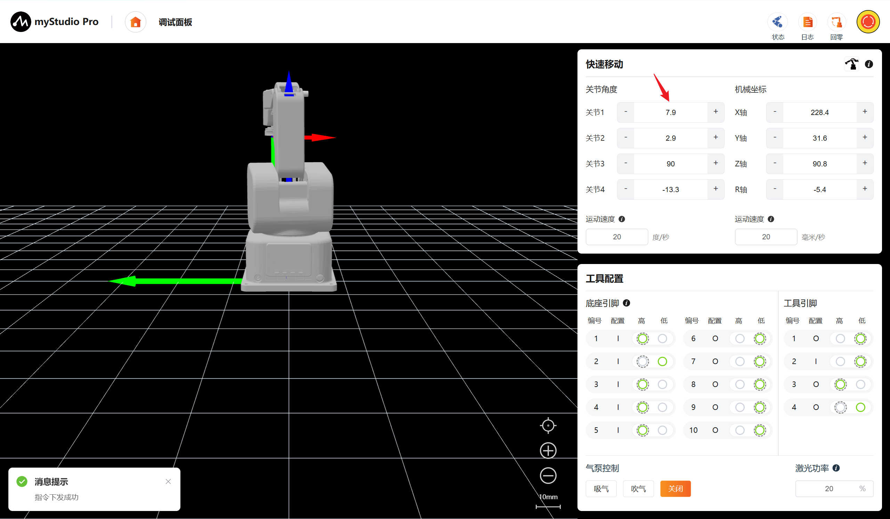
4 坐标控制
在使用坐标控制之前，建议将机械臂回零再进行操作。
注意：
输入角度:按设置的坐标运动步长移动至目标角度
长按”+"/"-"时:按此运动速度移动
单点”+"/"-"时:按最小速度运动0.1度
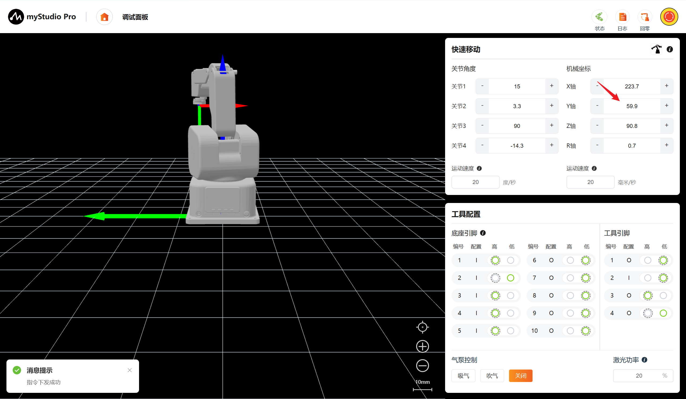
5 持续移动
以通过长按 对应区域的+ - 按钮，可以控制机器人按照指定的角度/坐标进行持续移动，鼠标松开后停止运动。
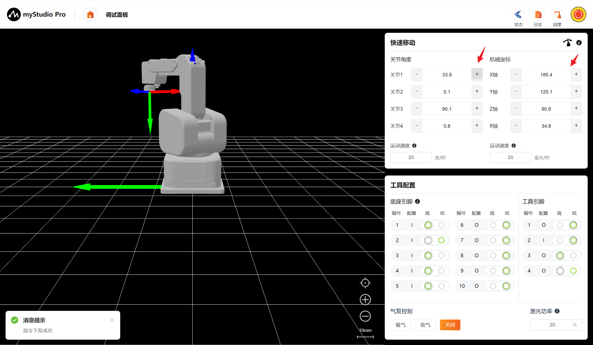
注意： 当长按操作持续运动到关节限位处时会自动停止。
6 运动步长
可对角度/坐标持续运动或Enter控制运动方式设置运动步长。
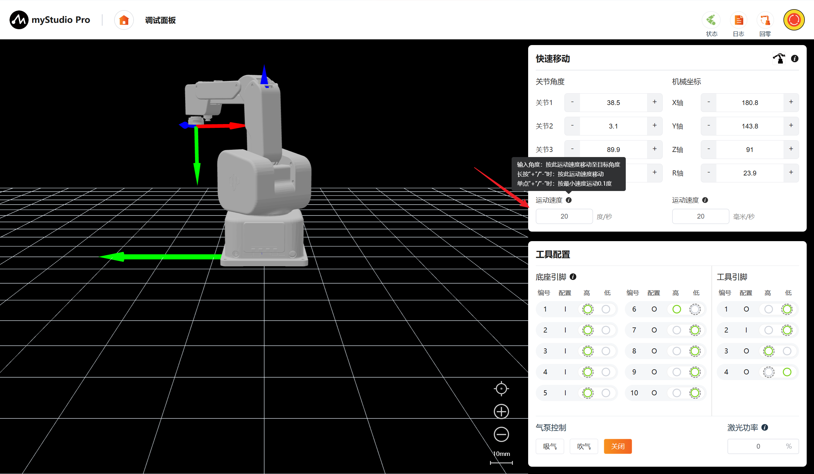
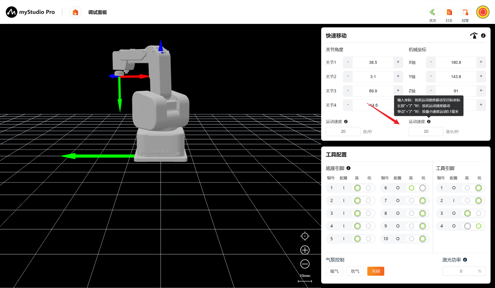
7 工具配置
在该功能模块可以直观的观察引脚编号、配置、电平状态，其中电平状态项中高亮的为当前引脚的实际状态。外边框虚线代表引脚配置页中设置的默认电平状态。可手动切换输出电平（高/低），并实时观察外部信号接入引发的输入电平跳变。
对于输入引脚：在无外部信号接入（悬空）时，其电平状态由默认配置的上/下拉电阻维持；当有外部信号接入时，引脚的实际电平将由外部信号直接驱动并决定。
I：表示为当前为输入引脚，无法切换电平高低
O：表示为当前为输出引脚，可以切换电平
外边框虚线：表示该电平为IO配置页面所配置的默认电平
7.1 底座引脚
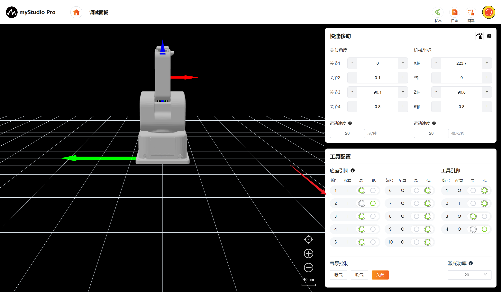
底座引脚6电平状态由低电平修改至高电平
7.2 工具引脚
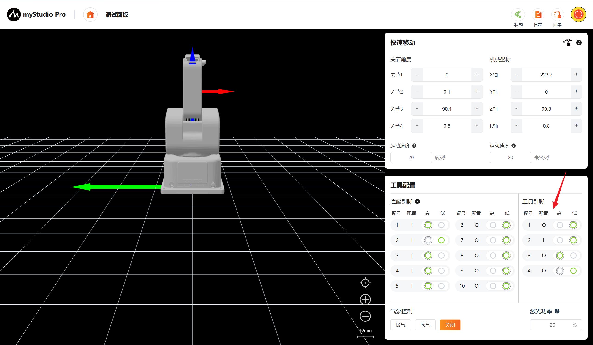
工具引脚3电平状态由低电平修改至高电平
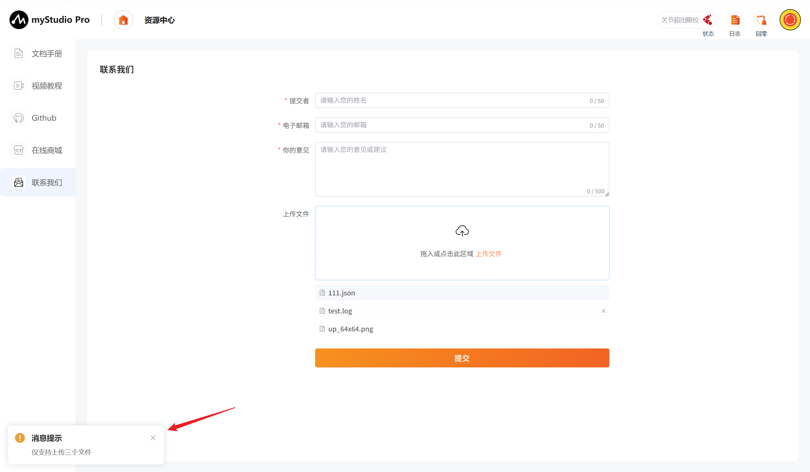
8 吸泵控制
可进行气泵控制包括吸气、吹气、关闭。其中按钮存在互斥，通过点击切换状态。
吸气：启动真空发生器，使末端吸盘产生67kpa负压。
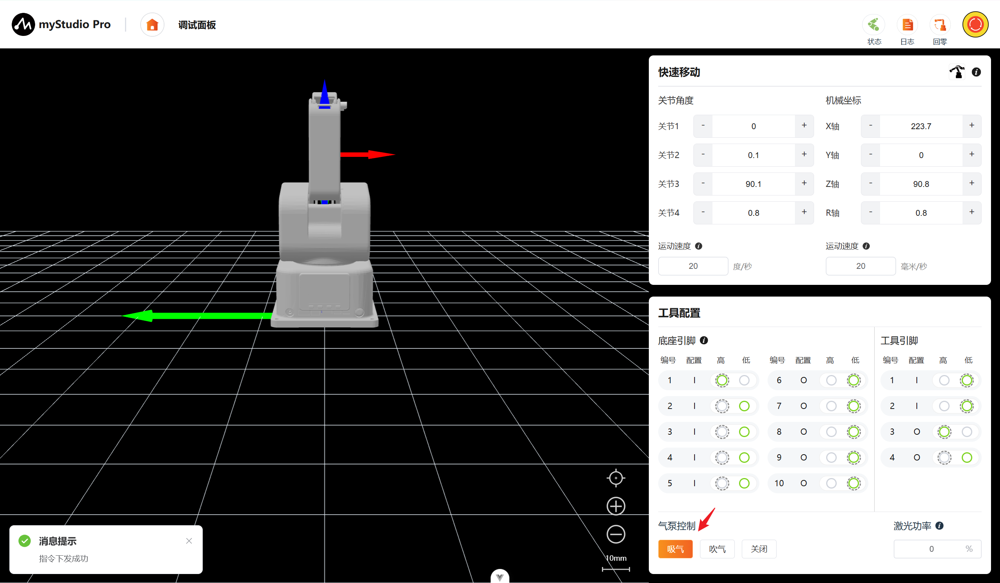
吹气：切换气路，使末端吸盘产生67kpa破真空气压。
关闭：切断气泵电源且关闭所有气阀，气路恢复至常压状态。
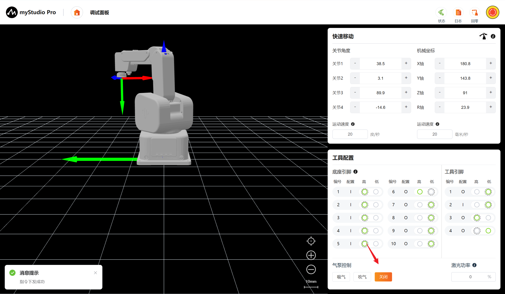
9 激光功率控制
通过文本框输入数值调控激光功率，回车或点击空白处提交修改，0%为关闭激光。
注意：严禁直视激光或将激光指向眼部
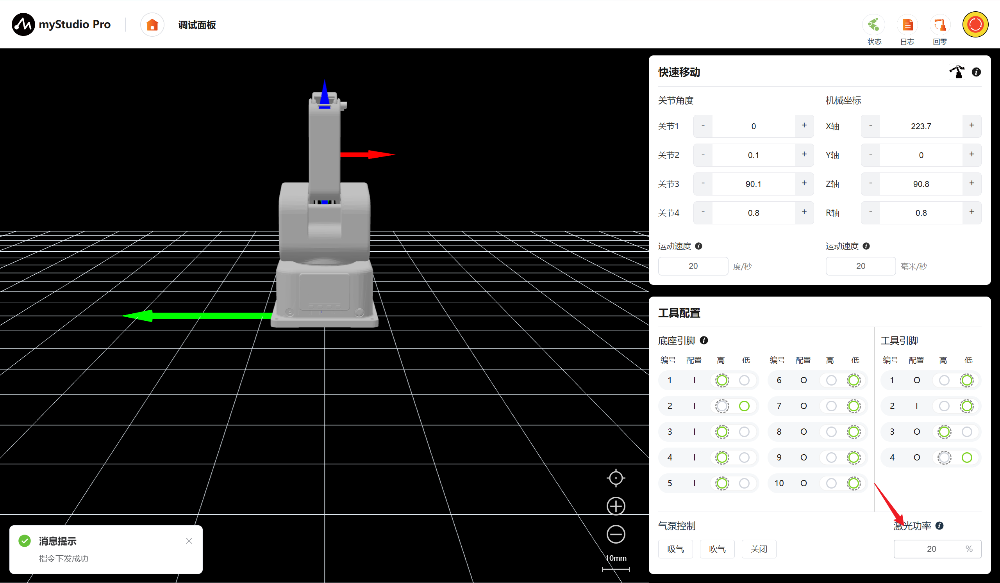